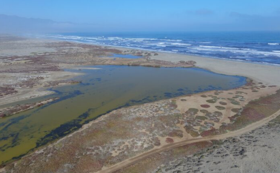

Como grupo escogimos el objetivo 14 que consiste en conservar y utilizar sosteniblemente los océanos,
los mares y los recursos marinos;
“El océano impulsa los sistemas mundiales que hacen de la Tierra un lugar habitable para el ser humano.
Nuestra lluvia, el agua potable, el tiempo, el clima, los litorales, gran parte de nuestra comida e incluso
el oxígeno del aire que respiramos los proporciona y regula el mar.
Una gestión cuidadosa de este recurso mundial esencial es una característica clave de un futuro sostenible.
No obstante, en la actualidad, existe un deterioro continuo de las aguas costeras debido a la contaminación
y a la acidificación de los océanos que está teniendo un efecto adverso sobre el funcionamiento de los ecosistemas
y la biodiversidad. Asimismo, también está teniendo un impacto perjudicial sobre las pesquerías de pequeña escala.
Proteger nuestros océanos debe seguir siendo una prioridad. La biodiversidad marina es vital para la salud de las
personas y de nuestro planeta. Las áreas marinas protegidas se deben gestionar de manera efectiva, al igual que sus
recursos, y se deben poner en marcha reglamentos que reduzcan la sobrepesca, la contaminación marina y la acidificación de los océanos.”
ONU. (z.d.). Objetivos de desarrollo sustentable. Océanos - Desarrollo Sostenible.
Geraadpleegd op 28 april 2022, van
https://www.un.org/sustainabledevelopment/es/oceans/
presione la imagen para mas información sobre "Laboca"
